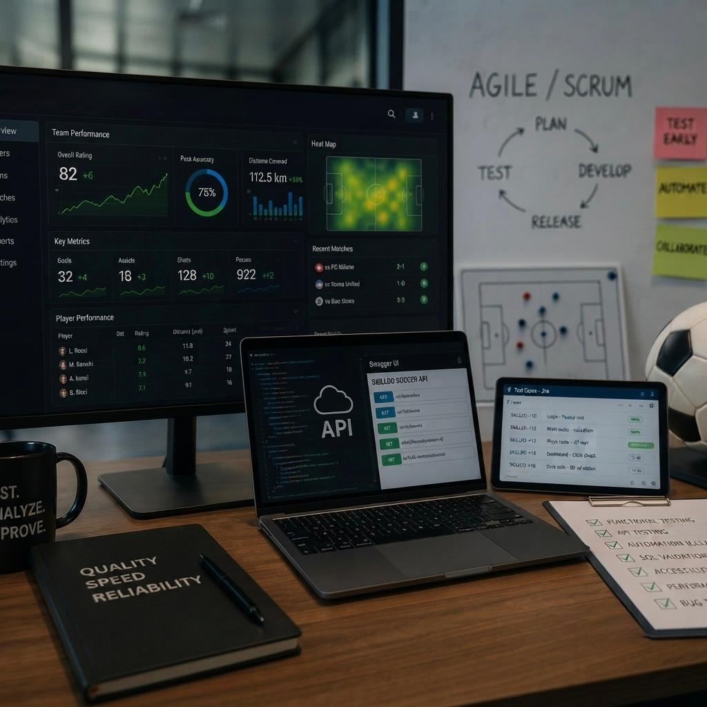

SPORTS ANALYTICS PLATFORM
SKILLDO SOCCER
Piattaforma digitale dedicata alla gestione e all'analisi delle performance nel settore sportivo
Nel progetto SKILLDO SOCCER mi sono occupato di attività di Quality Assurance su una piattaforma orientata alla gestione e all'analisi delle performance sportive. Il lavoro ha coinvolto diversi livelli dell'applicazione, dalla validazione funzionale delle interfacce fino ai servizi backend e alla qualità dei dati
Le attività hanno compreso functional testing, regression testing e REST API testing attraverso Swagger e Postman, oltre alla progettazione di test case e alla gestione strutturata dei difetti all'interno di Jira
Una parte significativa del progetto è stata dedicata all'automazione dei principali flussi end-to-end tramite Selenium WebDriver, permettendo di validare in modo ripetibile i percorsi funzionali più critici dell'applicazione
Ho inoltre lavorato sulla validazione dei dati attraverso SQL e PL/SQL, sui test di integrazione tra i diversi livelli applicativi, sull'accessibilità secondo gli standard WCAG e sull'analisi UX/UI tramite Axe DevTools